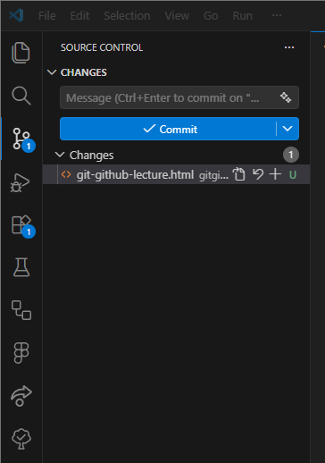
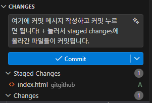
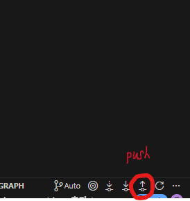

직접 해보는 Git & GitHub
오늘의 목표
깃허브에 clone → add → commit → pull → push를
직접 해서 코드를 올릴 수 있도록 하자.
오늘 할 것
1. Git, GitHub 알기
2. 저장소 clone 하기
3. 파일 수정 후 commit 하기
4. GitHub에 push 하기
5. branch와 PR 맛보기
한 줄 정리
Git = 버전 관리 도구
GitHub = Git 저장소를 올려두는 온라인 공간
즉, 컴퓨터(로컬)에서 Git을 이용해 코드를 관리하고 온라인(GitHub) 올린다.
팀플에서 어떤 파일이 최종 파일인지 헷갈린 적 없으신가요?
Git을 사용하지 않을 때
최종.ppt
최종_진짜최종.ppt
최종_진짜최종_수정.ppt
-> 누가 뭘 바꿨는지 모름
Git을 사용할 때
변경 이력이 남음
이전 상태로 돌아갈 수 있음
협업 흐름을 만들 수 있음
언제 무엇을 바꿨는지 남긴다.
실수해도 되돌릴 수 있다.
각자 작업하고 합칠 수 있다.
사전에 필요한 것들
Git 설치
버전 관리 도구
VS Code 설치
파일 수정용(코드 작성용)
GitHub 로그인
원격 저장소 사용
Git Bash는?
명령어를 입력하는 창(터미널)이다.
시스템 프로그래밍에서 배우는 리눅스 터미널을 떠올려보자.
처음 한 번 설정
git config --global user.email "내 이메일"
Github 저장소의 파일을 내 컴퓨터에 옮겨보자 : git clone부터
git clone
GitHub에 있는 저장소를 내 컴퓨터로 가져온다.
ex) git clone https://github.com/LikeLion-KNU/FE_likelion_Study_team1_14th.git
git init
아무것도 없는 로컬 폴더를 Git 저장소로 시작할 때 쓴다.
+ TIP
git clone 저장소주소 저장소이름
에서 저장소이름을 지정하지 않으면 Github의
저장소 이름으로 자동생성된다.
git init을 이용할 경우 기본 브랜치가
master인 경우가 있다. 이는 과거의 잔재로 현재는
main 브랜치가 기본 브랜치이다.
추가로 git init을 하면 따로 Github 저장소와
연결해야하므로 번거롭다. 따라서 git clone이
선호된다.
오늘 가장 중요한 흐름
clone
저장소를 내 컴퓨터로 가져온다.
status
무엇이 바뀌었는지 확인한다.
add
커밋할 파일을 올린다.
commit
변경 기록을 남긴다.
pull
원격 저장소 최신 내용을 먼저 받는다.
push
내 기록을 GitHub에 올린다.
cd 저장소이름
git status
git add .
git commit -m "기능 추가"
git pull origin main
git push origin main
지금 상태 확인
변경 파일 올리기
의미 있는 기록 남기기
VS Code로도 add commit push가 가능하다.
왼쪽 세 번째 아이콘



VS COde의 세번째 아이콘 Source Control에서 변경 파일 확인, 스테이징, 커밋, 푸시까지 할 수 있다.
하지만
status / pull / push 정도는 터미널에서도 한 번 해보는 게 좋다.
협업할 때는 main에 바로 작업하지 않는 습관이 좋다.
브랜치 생성
내 작업용 공간을 만든다.
작업 후 push
내 브랜치를 GitHub에 올린다.
PR 생성
합치기 전에 리뷰를 받는다.
git add 파일명
git commit -m "김지훈_0401 멋사 1주차 과제"
git push origin kimjihoon_0401
+ TIP
개인 과제는 main으로 해도 되지만, 팀 프로젝트는 feature 브랜치 → PR → merge 흐름을 추천.
1주차 과제 제출하기
실습 순서
1. GitHub에서 저장소 만들기
2. 저장소 주소 복사
3. Git Bash에서 clone
4. VS Code로 열고 파일 수정
5. add → commit → pull → push
따라칠 명령어
cd FE_likelion_Study_team1_14th
git checkout -b kimjihoon_0401
[코드 작성 후]
git add 파일명
git commit -m "김지훈_0401 멋사 1주차 과제"
git push origin kimjihoon_0401
마지막으로
merge, rebase, 등 다양한 커맨드가 있다. 상황에 따른 명령어를 전부 외울순 없기에, AI에게 상황을 설명하면 적절한 커맨드를 줄것이다.